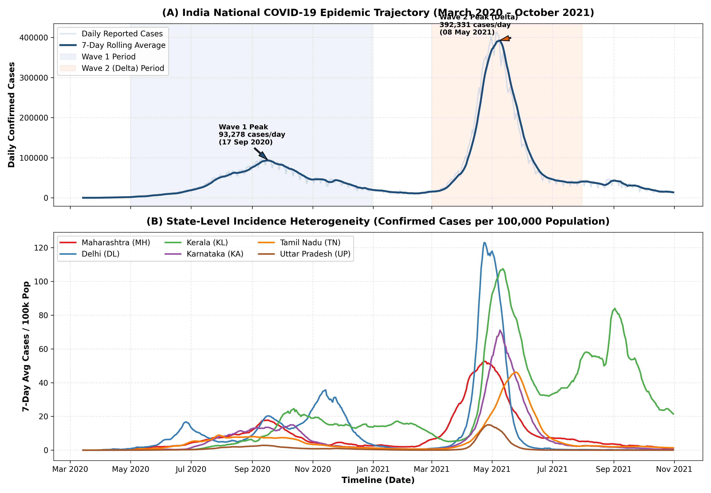
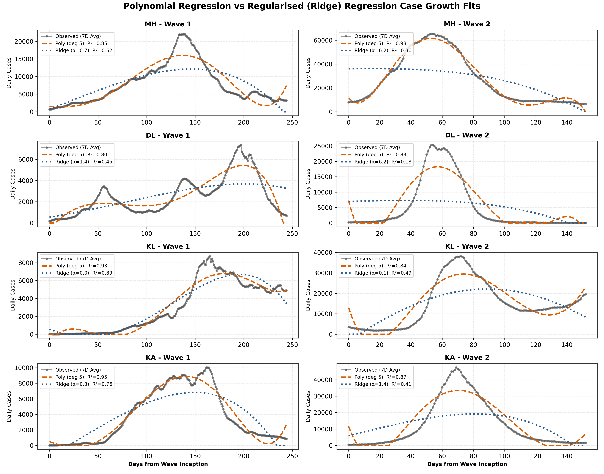
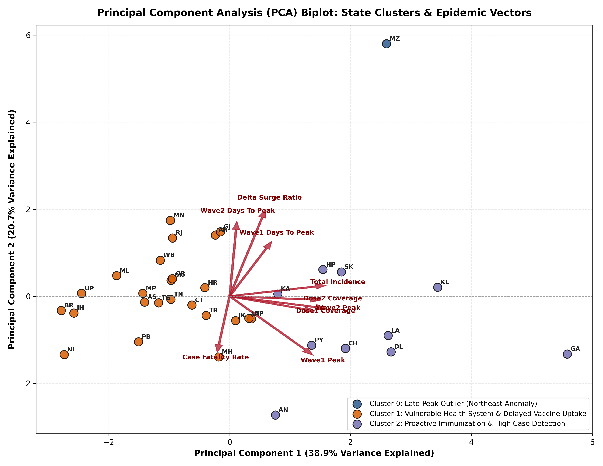
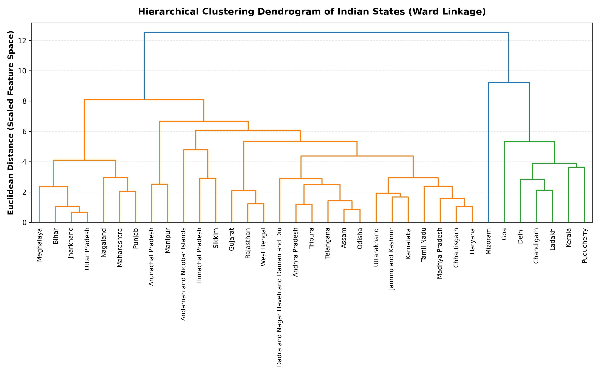
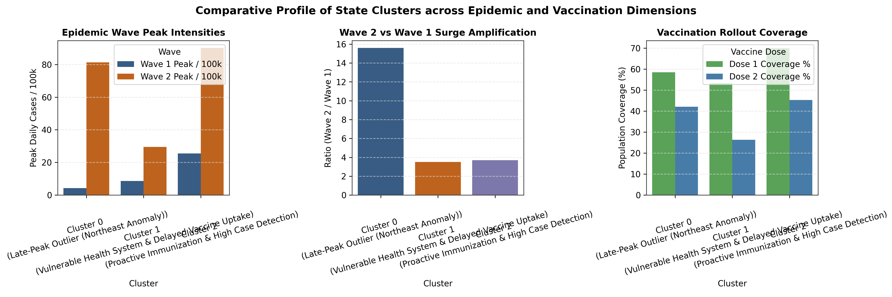
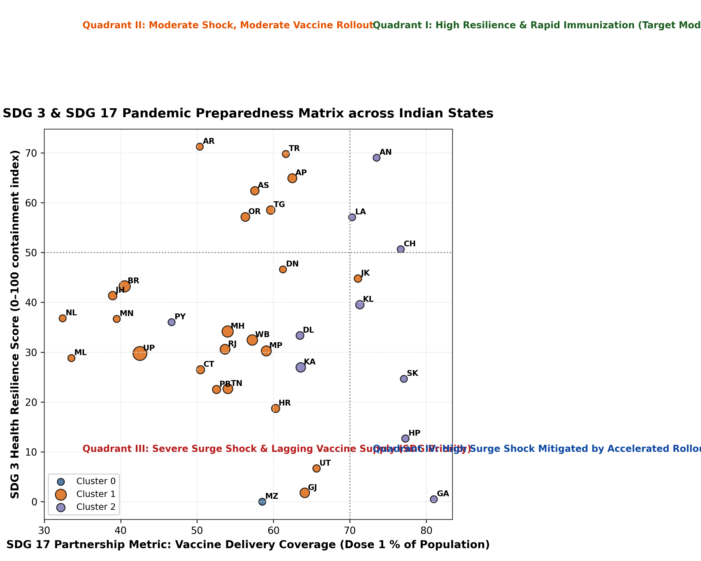

1. Daily Case Growth Modelling: Polynomial vs Ridge Regression
Select any Indian state or union territory to inspect observed epidemic trajectories alongside fitted regression models for Wave 1 and Wave 2.
Model Performance & Wave Kinetics
2. Dimensionality Reduction: Principal Component Analysis (PCA) Biplot
Visualizing the 9-dimensional state epidemiological & vaccination space compressed into the first two principal components (59.6% cumulative variance).
Variance Explained & Key Loadings
Top Feature Loadings on PC1 & PC2:
| Feature | PC1 | PC2 |
|---|
3. State Clustering & Epidemiological Archetypes
K-Means and Hierarchical Clustering partitioned 35 states and UTs into distinct pandemic preparedness archetypes based on normalized epidemic shapes and vaccine coverage.
4. Sustainable Development Goals (SDG 3 & 17) Policy Implications
Translating mathematical modelling and clustering into operational lessons for pandemic preparedness and health system resilience.
Good Health and Well-being
Target 3.d: Early Warning, Risk Reduction & Resilient Health Systems- Divergent Surge Dynamics: States exhibited widely different Delta surge multipliers (from 0.5x in early saturated regions to 15.6x in isolated geographies like Mizoram). Surveillance systems must tune thresholds regionally rather than adopting uniform national triggers.
- Lead Time for Resource Deployment: Polynomial modeling revealed a median 70-day window from inflection to wave peak. This provides a quantifiable lead time to mobilize liquid medical oxygen, ICU surge staffing, and therapeutic stockpiles.
- Mortality & Testing Artifacts: Case fatality rates varied from 0.4% to 2.8%, highlighting the vital role of testing density and clinical management protocols in averting preventable mortality.
Partnerships for the Goals
Target 17.18: Timely, Reliable & Disaggregated Data; Target 17.6: Science & Tech Sharing- Open Data Infrastructure: The COVID19-India volunteer API demonstrated the transformative power of crowdsourced civic tech and machine-readable data pipelines in filling federal data vacuums.
- Vaccine Delivery Equity: Cluster analysis demonstrated that states achieving >70% Dose 1 coverage by Oct 2021 mitigated subsequent transmission severity. Equitable inter-state vaccine allocation is paramount.
- Reproducible Panel Release: Releasing curated state-level panels under open licenses (CC-BY 4.0) fosters cross-border scientific collaboration and reproducible benchmark models for future pandemics.
5. High-Resolution Publication Figures (300 DPI)
Pre-rendered scientific figures prepared for peer-reviewed journal submission (Data in Brief / Scientific Data / ICDAM 2027).






6. Curated Panel Dataset & Open Downloads
Direct access to the curated datasets released alongside this study.
| State Code | State Name | Cluster Archetype | Wave 1 Peak / 100k | Wave 2 Peak / 100k | Delta Surge Ratio | Dose 1 Cov % | Dose 2 Cov % | CFR % | Silhouette |
|---|